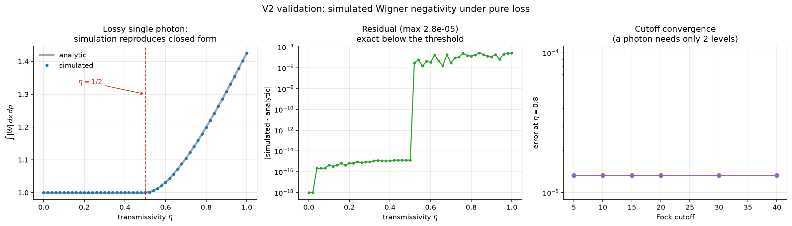
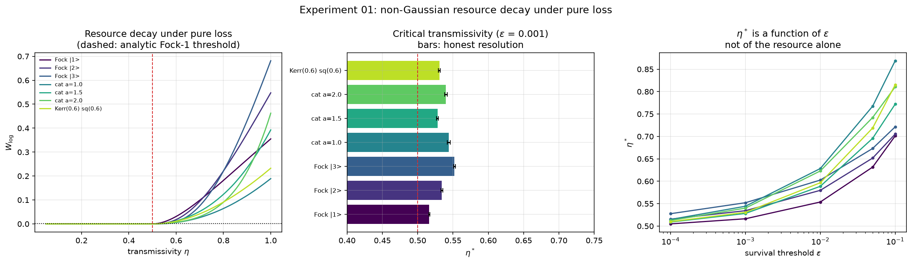

Where do loss, dephasing, circuit depth and resource placement end the operational advantage of a non-Gaussian photonic circuit over a resource-matched Gaussian one?
Non-Gaussian resources — Fock states, cat states, cubic-phase and Kerr interactions — are what lift continuous-variable photonic circuits beyond efficient classical simulation. Physical noise degrades them. The practical question is not whether that happens but where the boundary sits, and whether the boundary for a nominal resource measure coincides with the boundary for operational usefulness.
Recent work indicates these are not the same thing: Wigner negativity can persist after it stops implying useful computational resourcefulness. This project measures three quantities separately rather than assuming they track each other.
For a depth-$D$ circuit with imperfection channels $\mathcal N_l$,
the advantage over the best resource-matched Gaussian circuit under noise configuration $\nu$ defines a collapse boundary:
The Gaussian baseline is optimized under matched mean photon number, mode count, depth and measurement family. The comparison is against the best Gaussian circuit found under stated constraints, not against an arbitrary weak one.
Every quantity is checked against a closed form before it is used. The reference case is a single photon through a pure-loss channel of transmissivity $\eta$, which becomes $\eta|1\rangle\langle1| + (1-\eta)|0\rangle\langle0|$ with Wigner function
negative exactly where $r^2 < (2\eta-1)/(2\eta)$, so $\int|W| = 4\eta\,e^{-(1-\frac{1}{2\eta})} - 1$ for $\eta \ge \tfrac12$ and $1$ below. Wigner negativity of a lossy single photon therefore vanishes at exactly $\eta = 1/2$. One closed form exercises the channel, the Wigner transform and the negativity integral together.

| Quantity | Result |
|---|---|
| max |simulated − analytic| over $\eta \in [0,1]$ | 2.8 × 10⁻⁵ |
| Negativity threshold, located by bisection | η = 0.50502 (analytic 0.5) |
| Worst Gaussian-state $W_{\log}$ (must be 0) | 0.0 |
| Test suite | 248 passing |
By Hudson's theorem a pure state has a non-negative Wigner function iff it is Gaussian. A truncated, renormalised squeezed ket is not Gaussian, so it carries negativity that is numerical. At $r=1.0$, cutoff 20 this reaches $W_{\log}=0.063$ — 18% of a real single photon's 0.355.
For the cubic-phase gate two independent backends agree to $10^{-17}$ while both differ from the converged result by $9.6\times10^{-5}$, identically. They exponentiate the same truncated $x^3$. Where implementations coincide, only cutoff convergence is informative.
Critical transmissivity $\eta^*$ at which Wigner logarithmic negativity $W_{\log}(\rho) = \log\int|W_\rho|\,dq\,dp$ falls to a survival threshold $\epsilon$, for seven non-Gaussian resources. The single photon serves as a control: its threshold is analytically $\eta = 1/2$ as $\epsilon \to 0$.

| Resource | $W_{\log}$ at $\eta=1$ | $\eta^*$ ($\epsilon=10^{-3}$) |
|---|---|---|
| Fock $|1\rangle$ control | 0.3551 | 0.5163 ± 0.0008 |
| Fock $|2\rangle$ | 0.5476 | 0.5343 ± 0.0012 |
| Fock $|3\rangle$ | 0.6816 | 0.5520 ± 0.0014 |
| Cat $\alpha=1.0$ | 0.1891 | 0.5442 ± 0.0021 |
| Cat $\alpha=1.5$ | 0.3927 | 0.5281 ± 0.0014 |
| Cat $\alpha=2.0$ | 0.4625 | 0.5400 ± 0.0020 |
| Kerr(0.6) ∘ Sq(0.6) | 0.2326 | 0.5307 ± 0.0015 |
Two observations. Higher Fock states carry more negativity but lose it at higher transmissivity — larger resources are more fragile. And $\eta^*$ moves from 0.505 to 0.701 for the single photon as $\epsilon$ ranges over $10^{-4}$ to $10^{-1}$, which is why thresholds here are always reported together with $\epsilon$.
Phase diffusion averages $U(\phi)=e^{-i\phi \hat n}$ over $\phi \sim N(0,\sigma^2)$, which has the closed form
Diagonal elements are multiplied by $e^0=1$, so a Fock state is a fixed point: phase diffusion cannot reduce a Fock state's Wigner negativity at any $\sigma$, while it removes the interference fringes a cat state depends on. Which noise axis threatens a resource depends on the resource.
This channel also commutes exactly with pure loss, since loss Kraus operators preserve the Fock-index offset $m-n$ and phase diffusion depends on nothing else. A layered circuit built from these two alone collapses to a single $(\eta^D,\ \sigma\sqrt{D})$ channel, so depth is only an independent axis once a non-commuting element — a Kerr or cubic-phase gate, or mode mixing — sits between layers. The circuit layer reports which regime a given configuration is in.
A pure-NumPy reference backend written for transparency, and Piquasso 8.0.1 for production. Each cross-checks the other; conventions are pinned numerically rather than read from documentation.
Pure loss, Fock and coherent Wigner functions, the lossy-photon negativity integral and the phase-diffusion average all have analytic references used as tests.
Every headline result carries a cutoff-convergence check, grid diagnostics and a stated resolution floor. Truncation guards raise rather than returning plausible output.
Fock dimension grows combinatorially with mode count, so this is deliberately a 1–4 mode study rather than a general multimode simulator.
pip install -e ".[sim]"
pytest tests/ -q
python experiments/00_validation/run_validation.py
python experiments/01_loss_threshold/run.py@software{anderson_ngphotonic,
author = {Anderson, J. D.},
title = {Noise-Limited Non-Gaussian Photonic Circuits},
year = {2026},
url = {https://github.com/jeorgexyz/noise-limited-non-gaussian-photonic-circuits}
}